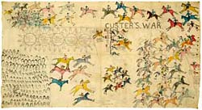

Pictograph is a pictorial image that has a specific meaning. Pictographs constituted a type of written communication for many native people.
|  |
| One Bull; Hunkpapa Lakota, Custer's War, about 1900, The Minneapolis Institute of Arts, The Christina N. and Swan J. Turnblad Memorial Fund, 94.47.1 |